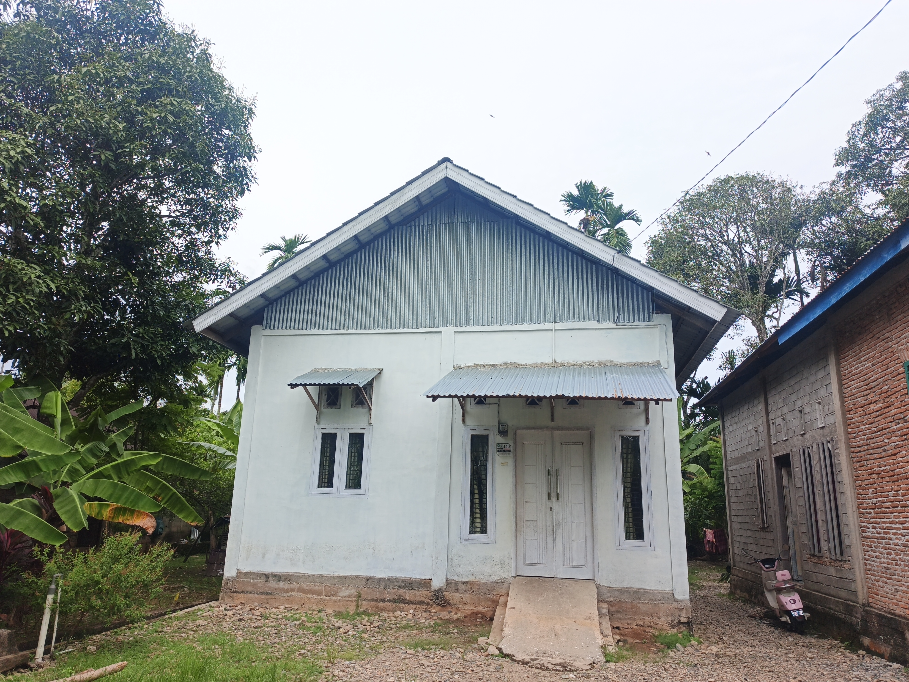
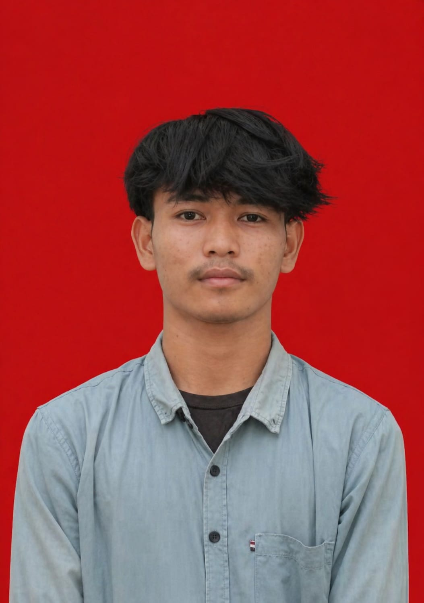

04 — DOKUMENTASI
Dokumentasi PKL

Kegiatan 1

Kegiatan 2

Kegiatan 3

Kegiatan 4
LAPORAN PRAKTIK KERJA LAPANGAN
Website presentasi Praktik Kerja Lapangan sebagai dokumentasi pengalaman dan kegiatan selama melaksanakan PKL.
Mulai Presentasi →
XII - Jurusan Rekayasa Perangkat Lunak
01 — PROFIL
02 — TEMPAT PKL
Kantor dinas pendidikan merupakan perusahaan yang bergerak di bidang teknologi informasi dan pengembangan perangkat lunak.
Selama melaksanakan PKL, saya mendapatkan kesempatan untuk belajar secara langsung mengenai dunia kerja dan menerapkan ilmu yang telah dipelajari di sekolah.
📍 Alamat
Jl.pendopo blang pidie💼 Bidang
Teknologi Informasi👨💼 Pembimbing
pak fikri03 — KEGIATAN
Membuat dan mengembangkan website menggunakan HTML, CSS, dan JavaScript.
Melakukan input, pengolahan, dan pengelolaan data perusahaan.
Membantu melakukan pengecekan dan perbaikan perangkat komputer.
Membantu pekerjaan administrasi dan dokumentasi perusahaan.
04 — DOKUMENTASI

Kegiatan 1
Kegiatan 2
Kegiatan 3
Kegiatan 4
05 — PENGALAMAN
06 — PENUTUP
Selama melaksanakan Praktik Kerja Lapangan, saya mendapatkan banyak pengalaman dan pengetahuan baru mengenai dunia kerja.
Kegiatan PKL membantu saya menerapkan ilmu yang telah dipelajari di sekolah sekaligus meningkatkan kemampuan teknis, kedisiplinan, komunikasi, dan tanggung jawab.